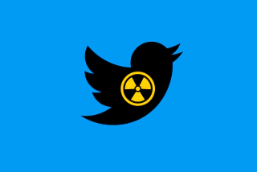

We often go to some social networks. But we don’t necessarily imagine what the «dark» side of these sites can do. Let me explain.
Twitter is a social network created in 2006. Often known as the rival of Facebook created by Mark Zuckerberg. At first it didn’t make a huge leap but it did create something that made it a signature. At first to write a Tweet, so a message on the news, it was only 140 characters, and I specify characters not words! But in 2017 it extended it to 280 characters. So Twitter is trying to force users to write a short and precise message. But there is a technique to extend this limit: threads. To explain it is to make messages in a row but which context. People often use it to explain something that has been changed on something. But also to explain a drama that has often turned into a drama.
Thinking that Twitter is a source of hatred, it sometimes brings out several things. In particular, cyber harassment when you give your opinion on something but some people don’t agree with it so they insult you. According to a study by SimpleTexting, 38% of users think that Twitter is the most toxic social network. This is due to people trolling the social media. And often what comes out is that they are afraid to post something because of what I said before. They have also seen negative comments about things like gender or sexual orientation.
But of course there is not only regret, there is also some hope